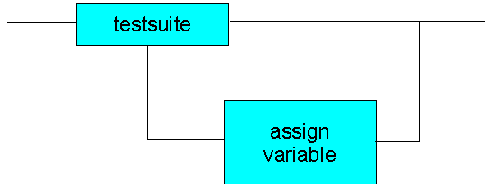

Delay Binning II: Assign Variables to Failing Parts
This strategy also ensures a failing site will stay alive through the flow; the figure below shows schematically the solution. If a device fails a testsuite, that site is assigned a variable. The testflow then continues - including as many similar constructs as necessary - until the point is reached where binning can take place. Here, if ... then constructs are used to bin the variables.

There are instances, however, where this strategy might not be the best one to use. In this case Solution III - Assign Variables and Activate Overon Enable might be more appropriate.
Functional changes
- Introduced before SmarTest 6.3.2